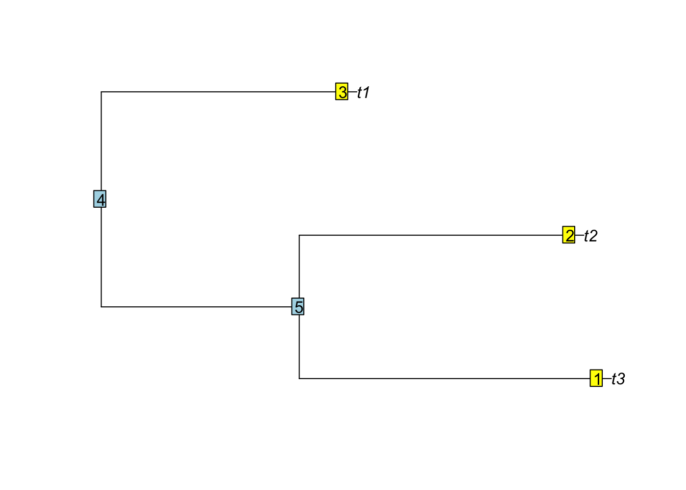

This was adapted from the chapter “All about trees” written by Brian OʻMeara from the manual “Getting started in R for Phylogenetics” by Marguerite A. Butler, Brian C. O’Meara, Jason Pienaar, Michael Alfaro, Graham Slater, and Todd Oakley
Learning objectives
Learning Objectives
At the end of this lesson you will:
Understand information content of phylogenetically structured data
Understand particular R tree formats in ape, phylobase, and ouch
Be able to hand-make trees
Be able to import trees from nexus, newick, and other major formats in use today
Be able to convert trees from one format to another
Be able to perform basic tree manipulations
R packages you will need
ape
ouch
Tree vocabulary
In nature, a tree is a large perennial woody plant. It has roots, a main trunk, branches, and leaves. In graph theory, a tree is a network where there is only one path between any two nodes (in other words, a network with no loops or cycles).
In phylogenetics, we use ideas and terminology from both graph theory and nature:
Terminal taxa are also known as leaves, terminals, OTUs (“Operational Taxonomic Units”), tips, or simply taxa.
Branches are also called edges or internodes.
Internal nodes (places where two or more branches connect) are also known as vertices and sometimes simply nodes (technically, leaves are also nodes).
A rooted tree has one node designated as the root, and all other nodes are descended from this root. Traditionally, the root node has at least two descendants; it may also have a subtending branch (an ancestral branch).
An unrooted tree has no root designated, making the oldest ancestor ambiguous.
A tree where every internal node has two and only two descendants is known as a binary or bifurcating tree.
A tree where at least one internal node has more than two descendants is said to be multifurcating; such a node is a polytomy.
Trees in phylogenetics generally represent either species trees (a history of the splitting of interbreeding populations) or gene trees (a history of the coalescence of gene copies). In both cases, it is generally believed that the true process is bifurcating, so that each split results in two descendants. Thus, polytomies on trees are generally taken as representing uncertainty in the relationships. However in the case of adaptive radiations, and other rapidly speciating processes, the true process may be approaching multifurcation.
Branches may have lengths; these lengths may correspond to time, amount of change (e.g., mutations) in some set of characters, number of speciation events, or some other measure.
A tree where all branch lengths from root to tips are equal is known as an ultrametric tree.
A tree without branch lengths is known as a topology.
A monophyletic clade is an ancestor and all its descendants.
Any edge or branch corresponds to a bipartition: a division of the tree into two parts connected by that edge (if a root were inserted on the edge, then each of those parts would be a clade).
Newick format
A very basic tree format is Newick (.tree), named after the seafood restaurant in New Hampshire where it was formalized in 1986 by James Archie, William H. E. Day, Joseph Felsenstein, Wayne Maddison, Christopher Meacham, F. James Rohlf, and David Swofford - the second meeting was at the restaurant; it is also called New Hampshire format for that reason). It is widely used in graph theory as well. It is simply a string. Each nesting on the tree corresponds to a parenthetical statement. For example, for this tree (drawn brute-force):
Taxa G and F form a clade, as do G, F, and E, as do A and B, and so forth. Thus, to create a Newick string, just go down the tree, nesting as you go:
(G,F)
((G,F),E)
other side:
(A,B)
(C,D)
((A,B),(C,D))
all together:
(((G,F),E),((A,B),(C,D)))
And that’s it (it will be clearer in the lecture) If a tree has branch lengths, these are entered following the descendant clade. For example, if the branch leading to G has length 1.0, we would write G:1.0 rather than just G. If the tree is ultrametric, and the branch below the common ancestor of G and F is of length 1.1, and the branch below that of length 3.5, we could write (note: a semicolon ; ends the newick string):
((G:1.0,F:1.0):1.1,E:2.1):3.5;
One aspect of the Newick (and most tree) representation is that there are many ways of representing the same tree. At every node, one can rotate the descendant branches (switching the left and right positions) and get the same tree (for example, imagine switching the G and E labels). Thus, the Newick strings
((G,F),E)
and
((F,G),E)
describe the same trees, though it might not be easy to tell at first glance. This is generally an issue for any tree representation. While Newick strings are compact and easy to understand, they also don’t lend themselves to easy tree traversal (moving up or down the tree). In most analysis software that performs computations along trees, some other representation is used.
NEXUS
The NEXUS format (*.nex or *.nxs) is widely used in bioinformatics. Many phylogenetics programs use nexus format including \(PAUP^*\), MrBayes, Mesquite, MacClade, etc., and many more can read nexus.
One of the key features is that it is very extensible with information in blocks. We will only be concerned with blocks of DNA sequence data, but any type of information can be added. This flexibilityy, however, can be a curse when you encounter new extensions to the format that your code did not anticipate. However, for the most part we will be using packages that read in nexus so you can reasonable hope that someone has dealt with the headache for you.
Nexus files are often used as inputs to phylogenetic programs. In that case, they typically only have a TAXA block and a DATA block. In our IQTREE2 example we also had a partition file in nexus format. But they can also return the output of the phylogenetic reconstruction, in that case they will have a TREES block as well.
Nexus syntax:
A NEXUS file begins with #NEXUS on the first line.
Blocks of information follow, tyically on multiple lines, enclosed by a BEGIN blockname; and END; (Key words are case-insensitive).
Comments are enclosed by square brackets [comments]
Typical blocks:
TAXA: The taxa block contains the names of the taxa.
DATA: The data block contains a data matrix (we will use DNA sequences).
TREES: The trees block contains one or more phylogenetic trees in newick format.
#NEXUSBegin TAXA;Dimensions ntax=4;TaxLabels SpaceDog SpaceCat SpaceOrc SpaceElf;End;Begin data;Dimensions nchar=15;Format datatype=dna missing=? gap=- matchchar=.;Matrix[ When a position isa"matchchar", it means that it is the same as the first entry at the same position. ]SpaceDog atgctagctagctcgSpaceCat ......??...-.a.SpaceOrc ...t.......-.g. [ same as atgttagctag-tgg ]SpaceElf ...t.......-.a. ;End;BEGIN TREES;Tree tree1 = (((SpaceDog,SpaceCat),SpaceOrc,SpaceElf));END;
phylo (ape 5.0 or above)
The ape package(Paradis and Schliep 2019) uses a different representation of trees. It uses R structures, lists, matrices, and vectors to store a tree. Each node in the tree receives a number. For example, here is the tree from before in ape format.
Here is simpletree with the node numbers printed. It is printed with the following commands:
For a tree with N tips, the tips have numbers 1…N and the nodes have numbers greater than N (this is in contrast to how this was done in early (<1.9) versions of ape). These numbers are used to store information about the tree’s structure.
To do this, a matrix is created, with height corresponding to the number of internal and terminal nodes and width 2. The first column of the matrix has the node at the beginning of the branch, the second has the node at the end of the branch. For example, for our simple tree, this matrix is
This alone is enough for a basic topology. However, it might be nice to know what the taxa actually are, rather than just numbers. To do this, a character vector with as many entries as the number of tips is used. In the example tree, this is
simpletree$tip.label
[1] "A" "B" "C" "D" "E" "F" "G"
It’s possible that internal nodes have labels, too (for example, the most recent common ancestor of a set of birds might be labeled Aves). If so, an optional node.label is used. If branch lengths are known, they are included as the numeric vector edge.length.
Finally, there are a few other elements (Nnode, the number of internal nodes; class=phylo) to set the class. To dump the the internal representation of phylo tree to screen, you can use unclass() which strips the class attribute (the S4 analog is attributes):
phylo trees are S3 objects. We’ll be learning more about them later, but an important thing to know is that you directly access any element of them by using the $ operator (as was done above). Optional elements, or even elements of your own devising, can be added to them, too, using the same operator.
ouchtree (ouch version 2.0 or above)
OUCHKing and Butler (2022) uses a different tree structure than does ape. First, OUCH’s is an S4 class, rather than S3. There are several differences between them, which you’ll learn later. There are two main distinctions that will be important now. It helps to have a metaphor: think of a car. The S3 representation of a car is all the parts, neatly disassembled and laid out. The S4 representation of a car is a closed box. With S3, you can look at and manipulate any part of the car directly and manipulate it (using the $ operator). You could check the amount of gas in the tank by directly accessing the gas. With S4, you should use a method, if one exists, to access and manipulate elements. For example, you could check the gas in the tank using the fuel gauge, if the fuel gauge method exists and works properly. S3 objects can be built up piecemeal, and there aren’t built-in checks to make sure that everything is correct: if you forget to add a wheel element to the S3 char, you won’t know there’s a problem until some function tries to access it and fails. S4 objects are instantiated once, when you pass them all the initialization info they need (they often have defaults, and often have internal consistency checks). OUCH uses the ouchtree class as a basic tree class, then derives other classes from this for storing information on analyses. The ouchtree class is:
setClass(
'ouchtree',
representation=representation(
nnodes = 'integer',
nodes = 'character',
ancestors = 'character',
nodelabels = 'character',
times = 'numeric',
root = 'integer',
nterm = 'integer',
term = 'integer',
anc.numbers = 'integer',
lineages = 'list',
epochs = 'list',
branch.times = 'matrix',
depth = 'numeric'
)
)
At first glance, it looks like creating a new ouchtree object will be a lot of work: there are 13 different elements, some of them vectors, built in the class. However, with S4 objects, the beauty of constructors comes into play. The constructor function for a new ouchtree is just the function
The ouchtree function only has four arguments, one of them optional. Using the function and these elements, all the other elements of the class are initialized.
The first element is nodes, a character vector of node ids (including internal nodes). Unlike ape, the leaves do not need to have smaller ids than internal nodes.
The second argument is ancestors, a character vector of node ids of the ancestors for the nodes in the nodes vector. The nodes and ancestors vectors almost correspond to the second and first columns of the apeedge matrix, respectively, with the exception that ouchtree includes the root node with an ancestor of NA.
The third element, times, represents the height of each node from the root. Remember that ape’s edge.length vector has the length of the branch subtending each node; instead, ouchtree has the sum of the lengths of all branches connecting a given node to the root. Again, the root node is included in ouchtree (with height 0) but not in ape.
The fourth argument, labels, is a vector of labels for both tips and internal nodes. If internal nodes do not have names, they get a label of <NA>.
For example, our example tree, when converted to ouchtree format, is
One other element of ouchtree, created on initialization, is a matrix showing shared amount of time on a tree between two tips (which may be the same tip). This, multiplied by a rate parameter, becomes a variance-covariance matrix under a Brownian motion model, which we’ll be discussing in the course.
The entire content of the simpletreeouch object can be dumped to screen using the following command (not executed here to save paper):
attributes(simpletreeouch)
A note about node numbering
phylo (ape) node numbers and order
In ape the node numbering is implied by the order of rows in the $egde matrix. Letʻs make a simple example, a tree with three tips:
Remember in the edge matrix, the first column is the ancestral node (parent), and the second column is the node number.
tree <-rtree(3)tree$edge
[,1] [,2]
[1,] 4 5
[2,] 5 1
[3,] 5 2
[4,] 4 3
plot(tree)nodelabels()tiplabels()

The nodes are listed in a rightward tree traversal order.
treedata (ggtree) node numbers and order
In the treedata object used by ggtree, treeio, and tidytree, the node numbers are the same (referring to the same nodes and ancestors), but the order that they are stored in is different. (Also note that ggtree plots trees ladderized by default).
It is important when combining phylo and treedata objects to always match by node (or when only tips are involved, by label).
If one simply pastes matrices together (e.g., cbind), the information will be connected to the wrong node!
Weʻll cover this in more detail in the next section.
References
Butler, Marguerite A., and Aaron A. King. 2004. “Phylogenetic Comparative Analysis: A Modeling Approach for Adaptive Evolution.”American Naturalist 164: 683–95. https://doi.org/10.1086/426002.
King, Aaron A., and Marguerite A. Butler. 2022. Ouch: Ornstein-Uhlenbeck Models for Phylogenetic Comparative Hypotheses. https://kingaa.github.io/ouch/.
Paradis, Emmanuel, and Klaus Schliep. 2019. “Ape 5.0: An Environment for Modern Phylogenetics and Evolutionary Analyses in R.”Bioinformatics 35: 526–28. https://doi.org/10.1093/bioinformatics/bty633.